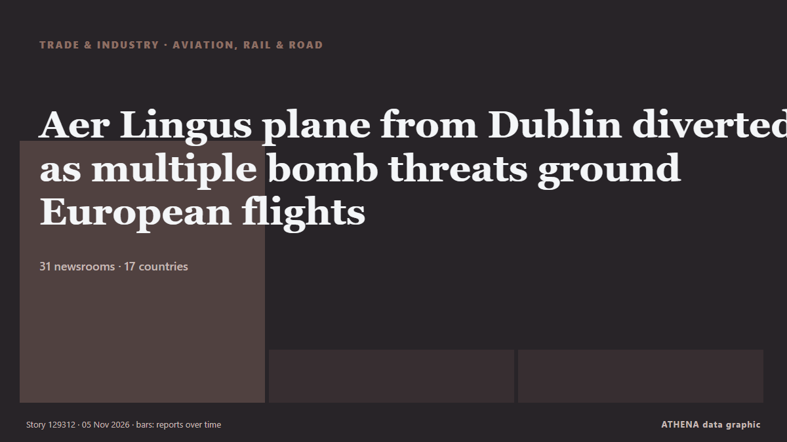

Aer Lingus plane from Dublin diverted as multiple bomb threats ground European flights

One of the flights affected was flying from Dublin to Rome when it was diverted to an airfield in northern France. von The Irish News (Belfast)
Unabhängig gemeldet von 31 Medien in 17 Ländern seit dem 5. Nov., zuerst von Cyprus Mail; die Berichterstattung flaut ab. ATHENA stuft das Risiko als mäßig ein (2.4/10), vor allem wegen der Schwere des beschriebenen Schadens und seiner geografischen und sektoralen Reichweite. Die Konfidenz liegt bei 87 % (hoch): 31 Medien bestätigen es unabhängig, bei einer mittleren Verlässlichkeit der Quellen von 74 %. Medien nach Land: Irland (7), Italien (4), Vereinigtes Königreich (3). Berichterstattung: 5. Nov. bis 5. Nov., 3 Stunden.
Warum es wichtig ist: Störungen in Handel, Industrie oder Infrastruktur wandern durch die Lieferketten und verändern Kosten und Lieferzeiten weit entfernt.
Was sich geändert hat: 33 neue Berichte von 28 Redaktionen in den 24 Stunden bis 5. Nov..
Erste Schlagzeile: Bomb alert diverts Airbus A320 plane going from Dublin to Rome
Schlagzeilen werden auf Englisch angezeigt, wie veröffentlicht.
Auf einen Blick
Ausgewählt, bewertet und geschrieben nach der veröffentlichten Methodik von ATHENA. Kein Redakteur greift in einzelne Ereignisse ein. So entsteht ATHENA ›
| 05 Nov 08:53 UTC | 25 |
|---|---|
| 05 Nov 09:53 UTC | 4 |
| 05 Nov 10:53 UTC | 4 |
| 05 Nov 09:14 UTC | 0.0 |
|---|---|
| 05 Nov 09:52 UTC | 1.3 |
| 05 Nov 10:08 UTC | 1.8 |
| 05 Nov 10:34 UTC | 3.1 |
| 05 Nov 13:55 UTC | 2.4 |
| 05 Nov 13:55 UTC | 2.4 |
Warum diese Zahlen
Bedeutung
Risiko
Konfidenz
Die Berichterstattung – wer berichtete, und wann
Schlagzeile wie veröffentlicht · öffnet das Original- Cyprus Mail · ZypernEurope hit by second wave of airline bomb threats
- Sydney Morning Herald · AustralienBomb threats divert more than a dozen flights in Europe
- Gulf News · Vereinigte Arabische EmirateDublin-Rome flight diverted to France over bomb threat: French government
- RTÉ News · IrlandAer Lingus plane among 27 flights hit by bomb hoaxes
- Arab News · Saudi-ArabienChaos hits European skies amid passenger jet bomb threats spree
- APA (English) · AserbaidschanPlane flying from Ireland to Italy diverted after bomb threat
- France 24 English · FrankreichDublin-Rome flight diverted to French military base over bomb threat
- Irish Independent · IrlandBomb alert diverts Aer Lingus plane from Dublin as multiple threats ground European flights
- Xinhua (English) — page reader · ChinaUrgent: Plane traveling from Dublin to Rome diverted to airbase in France following bomb alert -- media
- The Local France · FrankreichDublin to Rome flight diverted to France over bomb threat
- ANSA English · ItalienFlight from Dublin to Rome diverted to France over bomb threat - report
- TheJournal.ie · IrlandDublin-Rome flight diverted and Cork Airport receives bomb threat amid European hoax alerts
- The Straits Times · SingapurNew wave of bomb threats hits passenger flights across Europe
- ANSA English · ItalienFlight from Dublin to Rome diverted to France over bomb threat - report
- NBC News (World) · Vereinigte StaatenWave of bomb threats against European airliners triggers diversions and tarmac searches
- Anadolu Agency (English) · TürkeiPassenger plane diverted to French air base following bomb threat on board: Report
- Newstalk · IrlandAer Lingus flight diverted to France after bomb threat
- CNA (Channel NewsAsia) · SingapurDublin-Rome flight diverted to France over bomb threat
- NDTV · IndienDublin-Rome Flight Diverted To Military Air Base In France Over Bomb Threat
- The Guardian · Vereinigtes KönigreichMultiple planes diverted as bomb threats to commercial flights reported across Europe – live
- Irish Mirror · IrlandAer Lingus Dublin to Rome flight diverted to military base after bomb threat
- Arab Times · KuwaitMultiple flights in Europe diverted because of bomb threats after earlier hoaxes
- Times of India · IndienBomb scare forces Dublin-Rome flight to make emergency landing in France
- Free Malaysia Today · MalaysiaDublin-Rome flight diverted to France over bomb threat
- ANSA English · ItalienBomb alerts for several Italian flights, Air Force jets scrambled in Rome
- Irish Examiner · IrlandAer Lingus diversion and Cork Airport threat linked to Europe-wide security alerts
- ANSA English · ItalienBomb alerts for several Italian flights, Air Force jets scrambled in Rome
- Ada Derana · Sri LankaBomb alert diverts Airbus A320 plane flying from Dublin to Rome, French PM says
- Evening Standard (London) · Vereinigtes KönigreichMultiple reported bomb threats to flights for second time in a week
- Newstalk · IrlandFirst accounts from passengers on board Aer Lingus diverted flight emerge
- Fox News (World) · Vereinigte StaatenMultiple flights in Europe diverted because of bomb threats
- The Irish News (Belfast) · Vereinigtes KönigreichAer Lingus plane from Dublin diverted as multiple bomb threats ground European flights